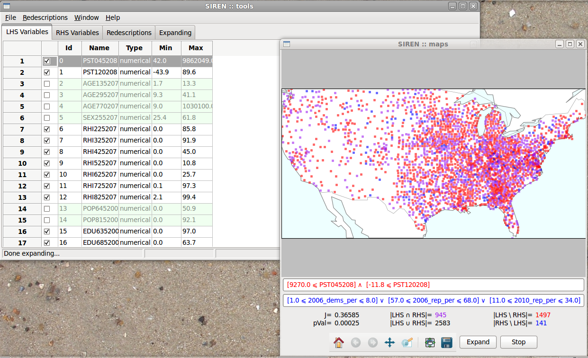

Siren is a multi-platform software. It has been used on MacOS and Ubuntu Linux.
Siren and ReReMi are licensed under the Apache License, Version 2.0.
Siren and it's core mining algorithm ReReMi are implemented in Python.
The interface is built with the wxPython Open Source GUI toolkit, ensuring cross-platform compatibility.
The matplotlib library enables to generate high quality figures, seamlessly integrated in the interface.
The source code has been packaged
using Python
distutils. To install,
unpack the downloaded archive and run python setup.py install
from within the created folder.
Siren requires a number of python
libraries, e.g. scipy, numpy, matplotlib, wxPython and
mpl_toolkit.Basemap. Make sure they are installed and accessible before you run Siren
You can find help under Siren's Help menu or online.
To install, download the above disk image and copy the file Siren to your Applications folder (or anywhere else outside the disk image). Once that is done you only have to double-click the program icon to run Siren.
You can find help under Siren's Help menu or online.

With a debian-based distribution run the following commands as root to install:
dpkg -i the_latest_siren_deb_package.debAfterward, you might need to run, to fix dependencies, i.e., install missing required packages
sudo apt-get -f installIf everything went fine, you should find a Siren entry in your Applications menu (probably under Science).
You can find help under Siren's Help menu or online.
Coming...